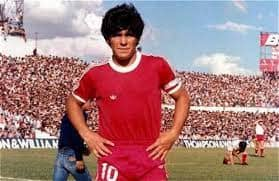
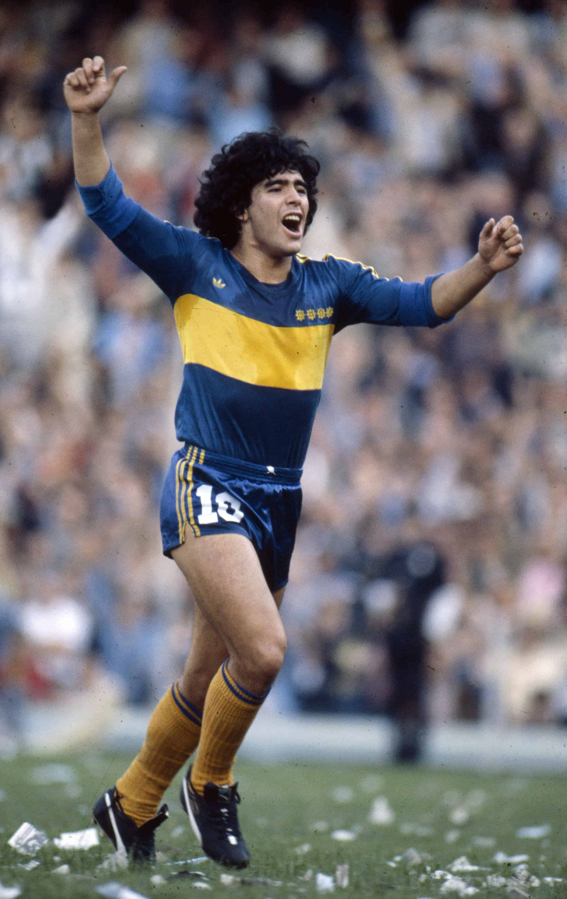
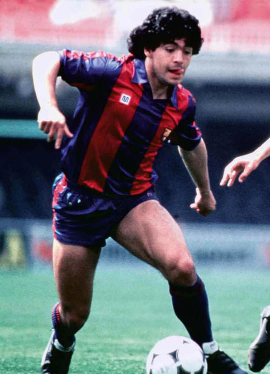
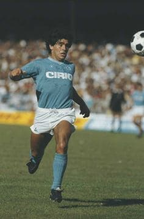
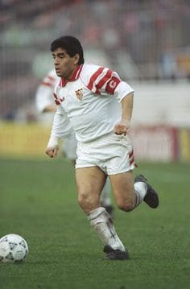
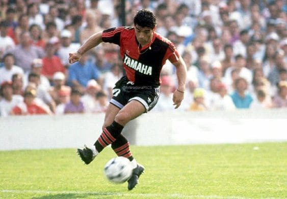
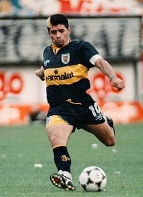

MENU
INICIO
GOLES
GALERIA
CONTACTO
BIOGRAFIA
TRAYECTORIA
TRAYECTORIA

Argentinos Juniors (1976-81)

Boca Juniors (1981-82)

F. C. Barcelona (1982-84)

S. S. C. Napoli (1984-92)

Sevilla F. C. (1992-93)

Newell's Old Boys (1993-94)

Boca Juniors (1995-97)